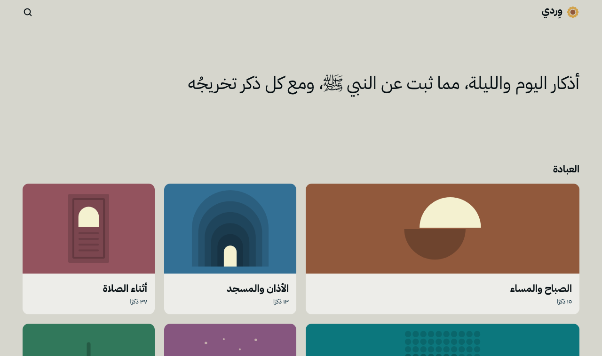
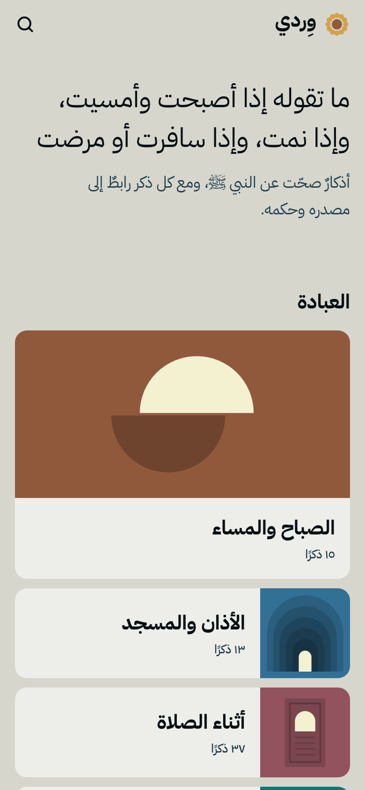
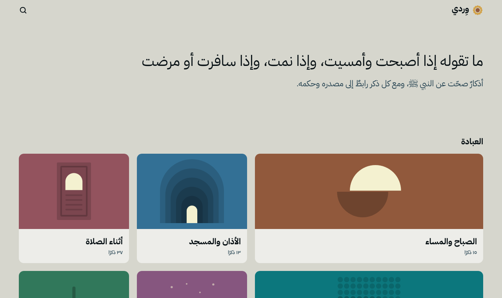
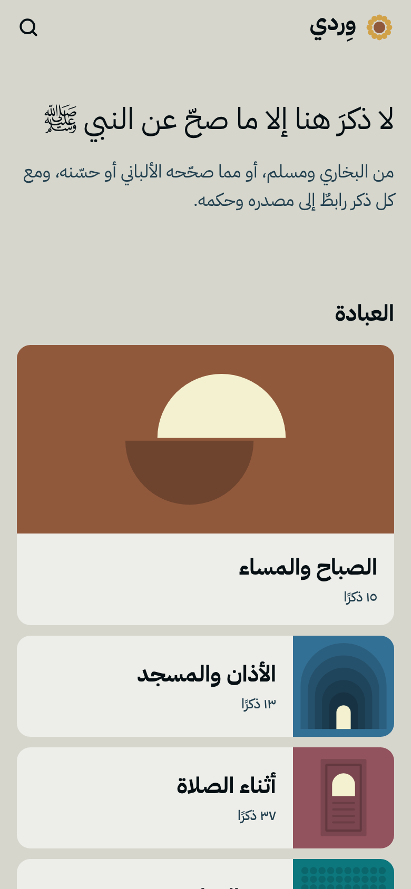
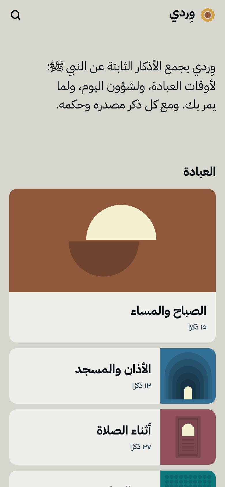
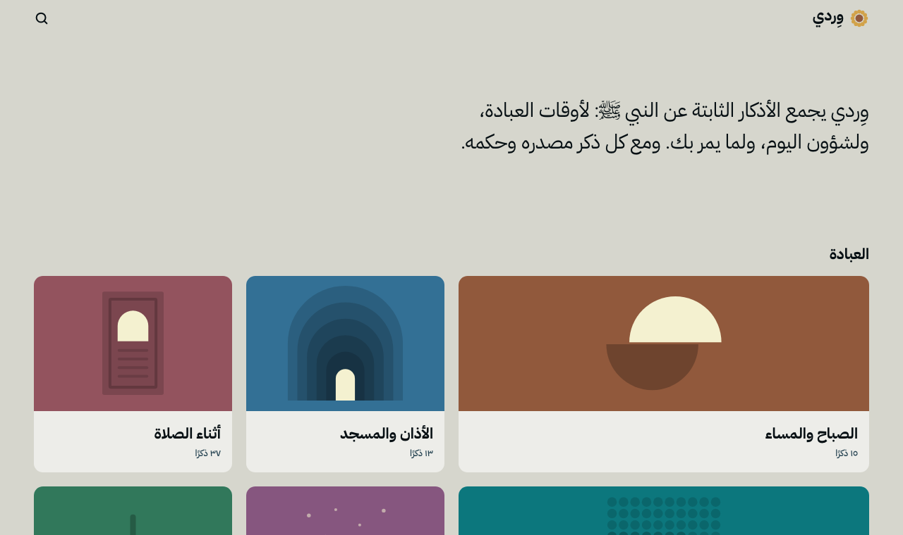
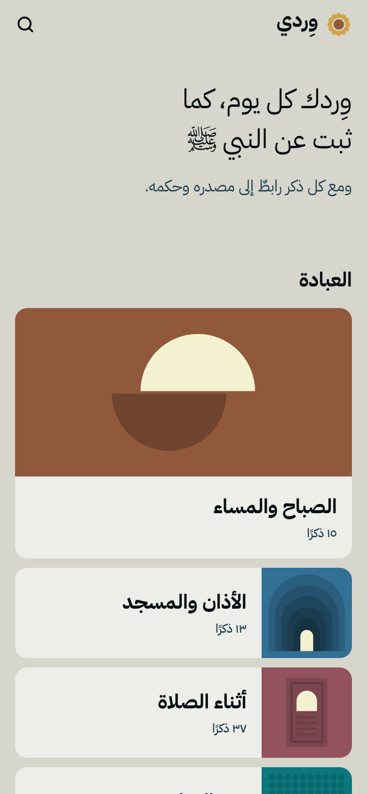
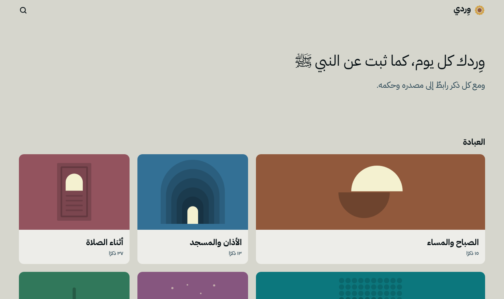

وِردي · الصفحة الرئيسية · ٢٧ نوفمبر ٢٠٢٦ · فرع worktree-homepage-message
سطر الصفحة الرئيسية: أربعة مقترحات
كل مقترح مبني في الموقع الحقيقي (خطوطه وألوانه وبطاقاته)، ومصوّر على الهاتف وسطح المكتب. اختر بسطر واحد في آخر الصفحة.
لماذا لا يوصلنا السطر الحالي
أذكار اليوم والليلة، مما ثبت عن النبي ﷺ، ومع كل ذكر تخريجُه
- «اليوم والليلة» عنوان باب في كتب الحديث (عمل اليوم والليلة للنسائي ولابن السني). يعرفه طالب العلم، ويمر عليه غيره كأنه «أذكار ٢٤ ساعة». ولا يدخل فيه عند القارئ السفر والمرض والمطر والجنائز، وكلها في الموقع.
- «تخريجُه» مصطلح. الفائدة التي خلفه (تفتح الذكر فترى من رواه وما حكمه، برابط إلى الدرر السنية) لا تصل إلى من لا يعرف الكلمة، وهم أكثر الزوار.
- «مما ثبت عن النبي ﷺ» يقولها كل موقع أذكار. حصن المسلم يصف نفسه بأنه «من أذكار وأدعية الكتاب والسنة». الذي ينفرد به وِردي هو القاعدة: ما في البخاري ومسلم، أو ما صححه الألباني أو حسّنه، وما ضعّفه يُترك ولو قبله غيره. السطر لا يذكرها.
- ثلاث جمل في سطر، والمعنى المميز في آخرها، حيث يتوقف أكثر القراء قبل أن يصلوا.
المبادئ التي بُنيت عليها المقترحات
م١ · قل ما يميزك
السطر يقول ما يفعله الموقع وما ينفرد به. واختباران: هل يصلح السطر نفسه لمنافس؟ وهل يمكن أن يدّعي أحدٌ عكسه؟ إن صلح للمنافس فهو لا يقول شيئًا.
Nielsen Norman Group · Tagline Bluesم٢ · ما هذا؟ وماذا أفعل هنا؟
الصفحة الرئيسية تجيب عن هذين أولًا. والسطر الجيد واضح، قصير (نحو ست إلى ثماني كلمات)، يبيّن الفرق والفائدة، وفيه روح لا عبارة عامة.
Steve Krug · Don’t Make Me Think · الفصل السابعم٣ · اختبار الخمس ثوانٍ
اعرض الصفحة خمس ثوانٍ ثم اسأل: ما هذا الموقع؟ ولمن؟ الكلمات العامة تنجح والمصطلحات تسقط. العنوان يحمل الوضوح، والسطر تحته يشرح.
Unbounce · Clarity of your value propositionم٤ · جملة Laws of UX
قدوتنا في الشكل تفتح بجملة واحدة صريحة: «Laws of UX مجموعة من أفضل الممارسات يأخذ بها المصممون حين يبنون الواجهات». اسم، ثم ما هو، ثم لمن، ثم متى.
lawsofux.com/arم٥ · بلسان القارئ
Quran.com يصف نفسه بأفعال القارئ: «اقرأ واستمع وادرس القرآن الكريم». يبدأ بما يريده الزائر، لا بما في المكتبة.
quran.comم٦ · لا تكرر ما تحته
تحت السطر مباشرة ستة عشر قسمًا في ثلاث فئات، بأسمائها وصورها. فالسطر لا يحتاج أن يعدّدها، وأولى به أن يقول ما لا تقوله البطاقات: لماذا هنا لا غيرنا.
من الصفحة نفسهاالقرار ١ · سطر الصفحة الرئيسية

لكل حال ذكرها
م٢ · م٥ما تقوله إذا أصبحت وأمسيت، وإذا نمت، وإذا سافرت أو مرضتأذكارٌ صحّت عن النبي ﷺ، ومع كل ذكر رابطٌ إلى مصدره وحكمه.


- يرى الزائر نفسه في أول كلمة: هذا ما أقوله حين أنام.
- كلمات عامة، يفهمها من لم يقرأ كتابًا في الحديث.
- يكرر البطاقات التي تحته (م٦).
- المميز في السطر الصغير، والعنوان يصلح لأي موقع أذكار (يسقط في م١).
لا ذكر إلا ما صح
المقترحم١ · م٣ · م٦لا ذكرَ هنا إلا ما صحّ عن النبي ﷺمن البخاري ومسلم، أو مما صحّحه الألباني أو حسّنه، ومع كل ذكر رابطٌ إلى مصدره وحكمه.

- أسلوب القصر (النفي ثم الاستثناء) أقوى ما في العربية لقول «هذا وحده». سبع كلمات (م٢).
- يجتاز اختباري م١: موقع فيه الضعيف لا يستطيع قوله، وعكسه واقعٌ في مواقع كثيرة.
-
السطر الصغير يذكر القاعدة كما هي في
docs/content.md، فيستطيع القارئ أن يتحقق منها، ويشرح «التخريج» بلا مصطلح. - يترك للبطاقات أن تقول ما في الموقع (م٦).
- لا يسمّي الأقسام في العنوان (البطاقات تحته مباشرة تسمّيها).
- ذكر الألباني باسمه صريح، وهو القاعدة الفعلية، لكنه قد يستوقف من يتبع غيره في التصحيح.
جملة واحدة على طريقة Laws of UX
م٤ · م٣وِردي يجمع الأذكار الثابتة عن النبي ﷺ: لأوقات العبادة، ولشؤون اليوم، ولما يمر بك. ومع كل ذكر مصدره وحكمه.


- وصف كامل في جملة: الاسم، وما هو، وما فيه. الفئات الثلاث بأسماء فئات الصفحة نفسها.
- أقرب الأربعة إلى صوت Laws of UX.
- ثلاثة أسطر على الهاتف، ضعف ما يوصي به م٢.
- وصفٌ لا وعد، و«الثابتة» يقولها غيرنا (م١).
وِردك
م٢ · م٥وِردك كل يوم، كما ثبت عن النبي ﷺومع كل ذكر رابطٌ إلى مصدره وحكمه.


- أقصر الأربعة وأدفؤها، ويرد على اسم الموقع: وِردي، وِردك.
- يخاطب القارئ مباشرة.
- «كما ثبت» يقولها كل موقع (يسقط في م١).
- «الوِرد» عند كثيرين قدرٌ ثابت كل يوم، فلا يوحي بأذكار السفر والمرض والمطر.
المقترحات أمام المبادئ
| م١ يميّز | م٢ قصير وواضح | م٣ بلا مصطلح | م٤ يقول ما هو | م٥ بلسان القارئ | م٦ لا يكرر البطاقات | |
|---|---|---|---|---|---|---|
| الحالي | ✗ | ✗ | ✗ | نصف | ✗ | ✓ |
| أ | نصف | ✓ | ✓ | ✓ | ✓ | ✗ |
| ب | ✓ | ✓ | ✓ | ✓ | نصف | ✓ |
| ج | نصف | ✗ | ✓ | ✓ | ✗ | نصف |
| د | ✗ | ✓ | ✓ | نصف | ✓ | ✓ |
القرار ٢ و٣ · ما يتبع السطر
٢ · عنوان التبويب في المتصفح وفي نتائج البحث
اليوم: «أذكار اليوم والليلة | وِردي»
- أ (المقترح): «أذكار الصباح والمساء والنوم والصلاة | وِردي». هذه الكلمات التي يكتبها الناس في البحث، والسطر في الصفحة يتولى التمييز.
- ب: «الأذكار الصحيحة لكل وقت وحال | وِردي». يوافق المقترح ب، لكن قلّما يُبحث بهذه الكلمات.
- ج: يبقى كما هو.
٣ · وصف الصفحة في نتائج البحث
اليوم: «… مما ثبت عن النبي ﷺ، مع تخريج كل ذكر.»
- أ (المقترح): «… مما صحّ عن النبي ﷺ، ومع كل ذكر مصدره وحكمه.» نفس اللغة التي في الصفحة، بلا مصطلح.
- ب: يبقى كما هو.
ردّك
اكتب السطر بالحروف التي تختارها، وعدّل عليه ما شئت (كلمة في العنوان، أو السطر الصغير):
١ب ٢أ ٣أ
الصفحات الحيّة (ما دام الخادم المحلي يعمل): الحالي · أ · ب · ج · د